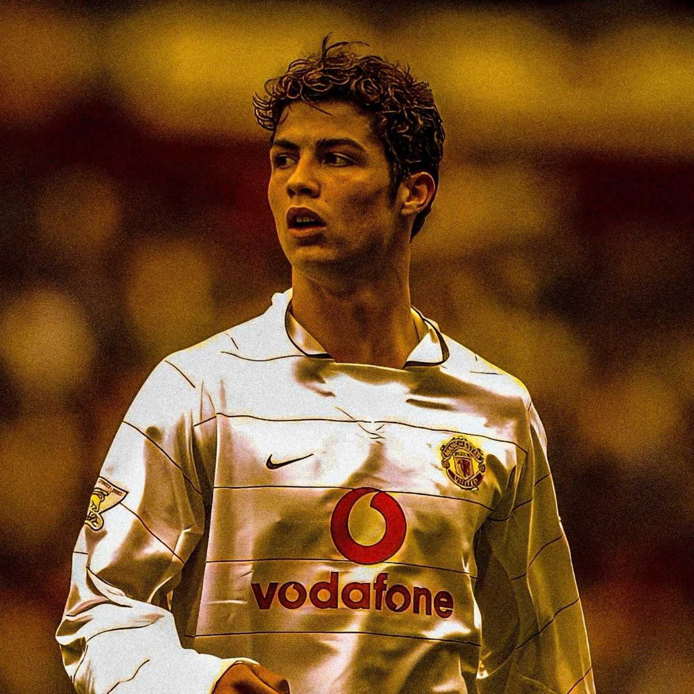

Quem é e por que me inspira

Cristiano Ronaldo é um jogador de futebol português e uma das maiores referências do futebol mundial. Durante sua carreira, conquistou muitos títulos e prêmios, além de ter feito história por clubes e pela seleção de Portugal. O que mais me marca é a sua dedicação e força de vontade, porque mesmo depois de conquistar tantas coisas, ele continua se esforçando para melhorar e dar o seu melhor. Isso me inspira a não desistir dos meus objetivos e continuar tentando, mesmo quando as coisas ficam difíceis.
Em suas próprias palavras
"Na minha cabeça, eu sou o melhor. Se não pensarmos assim não temos ambição. Eu tenho de pensar que, na minha profissão, eu sou o melhor". Posso não ser, mas na minha cabeça eu sou o melhor.
Cristiano Ronaldo, durante uma entrevista em outubro de 2015, enquanto divulgava o seu filme documentário chamado "Ronaldo".
"Siiii!!""
Cristiano Ronaldo entoando o grito de "guerra" do Real Madrid após receber a Bola de Ouro da FIFA em 1/12/2015
Saiba mais
Para conhecer melhor a trajetória do Ronaldo, acesse: Cristiano Ronaldo.